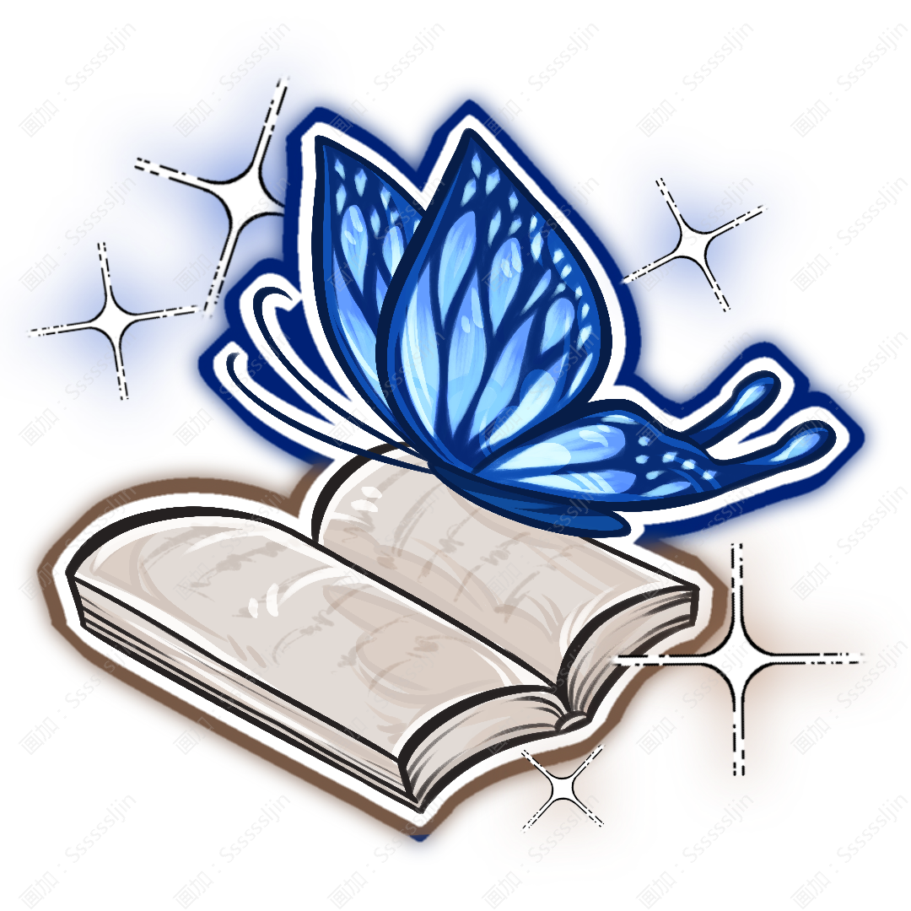

Amemiya Mio
雨宮澪

姓名：雨宮澪。
英文：Amemiya Mio。
種族：人類。
性別：女。
生日：12月27日。
年齡：15歲。
居住：浮燈自治區。旅行以前一直與家人居住，目前沒有長期旅行時仍會回家。
身高：163cm。
體重：49kg。
深黑色長髮，皮膚顏色較深，從鼻樑、眼下、肩膀一直到手臂都散佈着大量細小的淺色斑點。
這些斑點並不是普通雀斑，而是她出生時便存在的特殊色素紋樣，大小並不完全一致，遠看像有人把一層細碎的星塵撒在她身上。
她的眼睛是偏明亮的金黃色， 受到靈契影響以後，她原本普通的圓形瞳孔發生了細微變化——睜開眼睛時，金色虹膜深處會出現非常淡的藍色蝶翼紋路。因爲那个纹路她眼睛睜開會不舒服，所以平時幾乎總是微微眯着，因此第一次見到她的人很少真正看清她完整的眼睛。她很少戴首飾卻帶着一個單邊眼鏡，和會在頭髮一側固定一枚很小的藍色蝴蝶髮夾。那枚髮夾並不昂貴，甚至已經有些舊了，但她用了很多年。她最常隨身攜帶一本厚厚的書。看起來像普通旅行筆記。但裏面什麼都有。地圖、票據、樹葉、店鋪的小紙條、陌生人隨手寫下的一句話，甚至還有一些她自己已經忘記爲什麼夾進去的東西。
安靜、溫和、禮貌、聽話，是從小到大所有大人口中的“乖孩子”。
她幾乎不會主動給別人添麻煩。別人讓她稍等一下，她會安靜地等。
別人說“這樣比較好”，她通常會回答“好”。不喜歡的東西遞到面前，她也很少直接說討厭。
被人詢問意見時，她最習慣的回答不是“我想要這個”，而是：“都可以。”她很擅長觀察別人，因此總能很快發現怎樣做會讓周圍的人更加輕鬆。
久而久之，她已經習慣先判斷“別人希望我怎麼做”，再去考慮自己的想法。可問題在於——她考慮自己的次數實在太少了。
所以有時候別人突然認真問：“雨宮，你自己想要什麼？”她反而會愣住。她不是沒有感情，也不是沒有自己的喜好。只是她太習慣把那些小小的願望放到最後。
雨宮不擅長表達強烈情緒。如果很喜歡一個地方，她不會馬上說“這裏好漂亮”，而是晚上回去以後偷偷寫兩頁。如果很喜歡一個人，也很少直接告訴對方。
那個人可能要在很久以後偶然翻到她的旅行記錄，才發現——原來自己佔了好多頁。
世界顶尖综合学院中学部学生；小蘼同班同学；主角三人组成员。
看書、收集漂亮書籤、尋找安靜的地方、記錄旅途中遇見的人與故事、收集不同地方的紙張；每到一個地方都會留一張當地的紙夾進自己的書裏。
親眼看看儘可能多的地方，並且慢慢弄明白——自己究竟喜歡什麼、討厭什麼，又真正想去哪裏。她不要求自己的記錄成爲歷史，也不希望成爲著名作家。她只是希望有一天重新翻開這些書的時候，能夠清楚知道：這些路不是別人替她選的。是她自己走過的。
寫作、速寫、地圖繪製、路線記錄、觀察細節、整理旅行資料、幻屬性控制；記憶力很好，尤其擅長記住場景中的位置與顏色。
力量：★★☆☆☆
體力：★★★☆☆
智慧：★★★★★
魅力：★★★☆☆
幸運：★★★★☆
武器：書。
屬性：幻，藍。
技能：
「藍頁」
雨宮翻動書頁，將藍屬性附着在文字與紙張上。被她標記過的位置會留下只有她與頁頁能夠清楚辨認的淡藍色蝶形光點，可以用於標記道路、物品與安全路線。
「虛頁」
雨宮將自己記錄過的某個簡單景象短暫投射到現實中。例如一扇實際上不存在的門、一段錯誤延伸的道路、一盞燈或一個模糊人影。這些都只是幻象，無法真正觸碰物體。而且她必須親眼見過並認真記錄過那個景象，才能較穩定地重現。因此她的書寫得越多，能夠製造的幻象也越豐富。
「蝶跡」
大量藍色光蝶從書頁中飛出，沿着雨宮指定的方向散開。光蝶本身幾乎沒有攻擊能力，卻會在經過的位置留下短暫的藍色軌跡。雨宮可以利用這些軌跡判斷空間與路線，也能夠讓幻象沿軌跡出現。
大招「蝶夢」
雨宮將整本書完全展開。書中的文字、圖畫與紙頁邊緣逐漸化作大量藍色蝴蝶飛向周圍。範圍內的現實景象開始被她書中記錄過的場景覆蓋——街道可能突然延伸成不存在的長廊，門後出現另一片天空，遠處的人影被重複投射，方向與距離也會變得難以判斷。被困其中的人不會真正進入另一個世界。他們只是暫時看見了雨宮曾經見過的無數地方。雨宮自己則能夠通過真正的藍色蝶跡判斷現實道路。效果結束以後，所有幻象重新化作蝴蝶飛回書中，恢復成文字與圖畫。
特殊能力：雨宮與頁頁在附近時，靈契會增強她對幻象細節的控制。頁頁飛過的位置可以成爲雨宮釋放幻象的臨時起點，因此即使雨宮本人沒有站在那裏，也能讓一個小型幻象從頁頁附近展開。同時，雨宮能夠感受到頁頁強烈的情緒與大致狀態。
頁頁
種類：蝴蝶靈獸。
屬性：幻。
頁頁是一隻體型比普通蝴蝶稍大的藍色蝴蝶靈獸。
翅膀主體呈深藍色，邊緣逐漸變成近乎透明的淺藍。翅面上分佈着大量非常細小的金色光點，展開時像一小塊被剪下來的夜空。
它的靈性並不算特別強，也完全不是擅長正面戰鬥的靈獸。
性格卻意外地固執。它最喜歡停在雨宮正在看的那一頁書上。
雨宮把它趕到左邊，它會走回來。趕到右邊，它還是會走回來。
有時候雨宮最後只能隔着它繼續看字。
頁頁也很喜歡躲進雨宮的黑髮裏。因爲翅膀顏色很深，不仔細看甚至很難發現。
雨宮旅行時，它通常不會一直飛在外面，而是停在她的頭髮、肩膀或書封上休息。
技能：
「蝶映」
頁頁可以製造幾個與自己完全相同的蝴蝶幻影。幻影沒有實體，受到觸碰便會消失，但能夠用於混淆視線與方向。